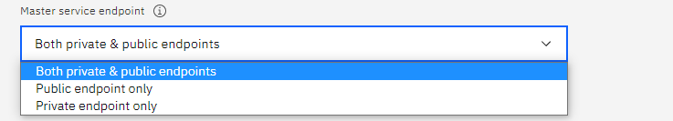
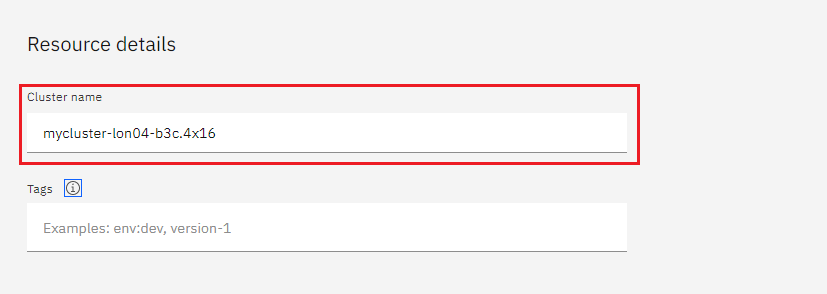
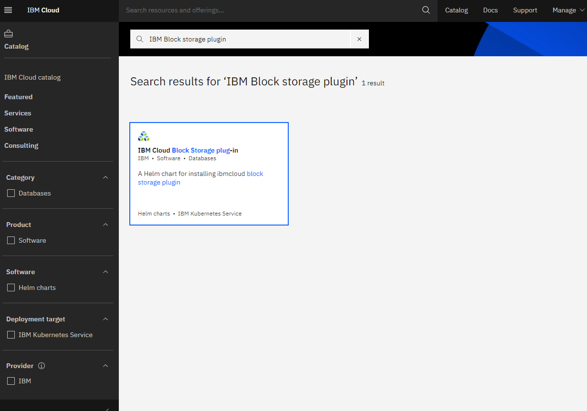
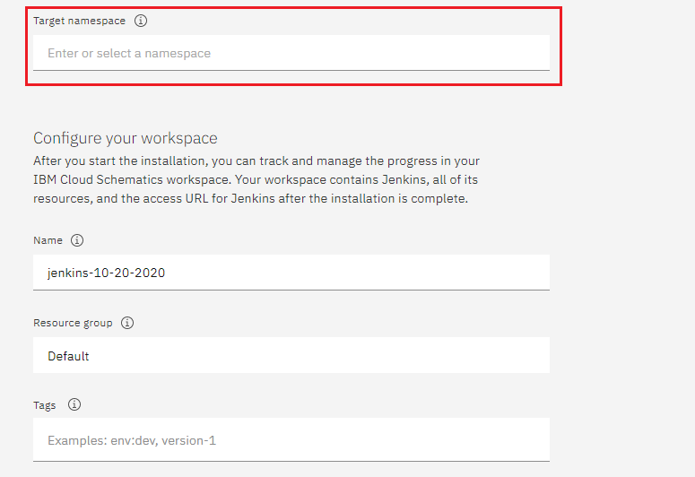
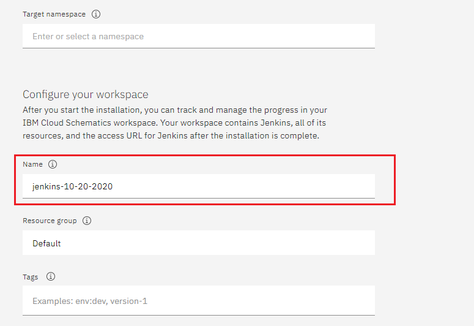
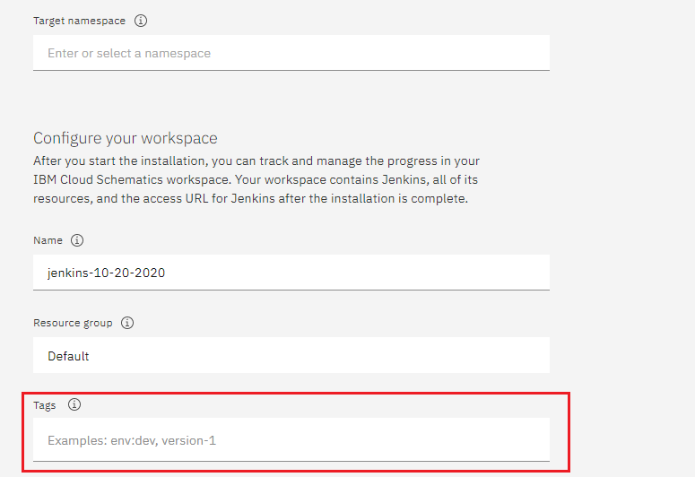
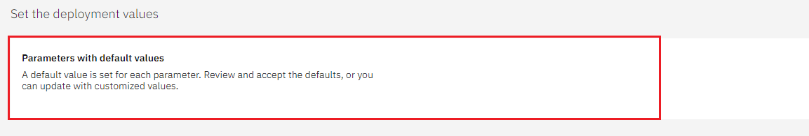
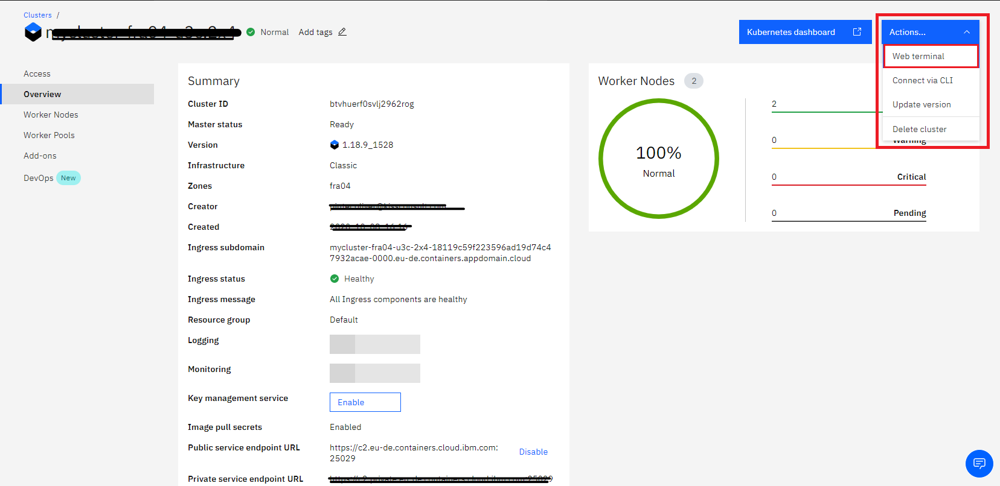
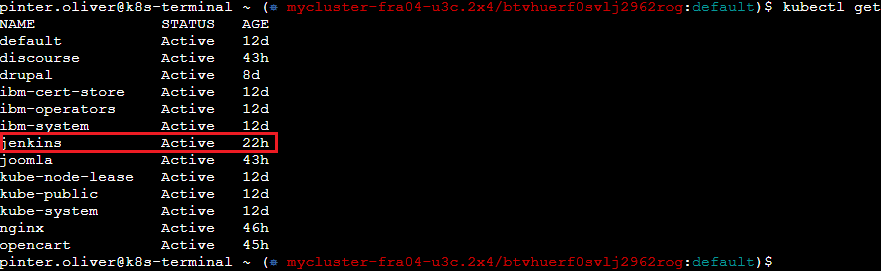
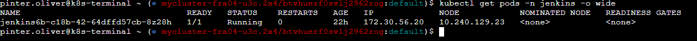

Jenkins on IBM Cloud
Table of Contents
This tutorial demonstrates how to deploy Jenkins on IBM Cloud. Before deploying, you should have an IBM Cloud account, otherwise you can register here. At the end of the tutorial you will have a cluster with Jenkins up and running.
To deploy Jenkins on IBM Cloud:
-
Provision a Kubernetes Cluster. If you already have a Kubernetes cluster, you can skip to step 2.
-
Deploy IBM Cloud Block Storage plug-in. If you have already deployed the the IBM Cloud Block Storage plug-in, you can skip to step 3.
Provisioning a Kubernetes cluster
When deploying Jenkins to IBM Cloud, you must first provision a Kubernetes cluster.
| If you already have a Kubernetes cluster, you can skip to Deploying the IBM Cloud Block Storage plug-in. |
To provision a Kubernetes cluster:
-
Select Catalog in the upper left corner.
-
Select Service from the catalog.
-
Search for Kubernetes Service and select it.
You are now at the Kubernetes deployment page, and you need to specify some details about the cluster.
-
Choose a plan type of standard or free. The free plan only has one worker node and no subnet.
-
To provision a standard cluster, you will need to upgrade your account to Pay-As-You-Go. To upgrade to a Pay-As-You-Go account, complete the following steps:
-
In the console, go to Manage > Account
-
Select Account settings, and then select Add credit card.
-
Enter your payment information, select Next, and then submit your information.
-
-
To choose Classic or VPC, read the docs, and then select the most suitable type for yourself.
-
Now choose your location settings. For more information, please refer to Locations.
-
Choose Geography (continent).
-
Choose Single or Multizone. In single zone, your data is kept in only one datacenter. With Multizone, it is distributed to multiple datacenters, and thus safer in an unforeseen zone failure.
-
Choose a Worker Zone if you use Single zones or Metro if you use Multizone.

-
If you wish to use Multizone, set up your account with VRF or enable VLAN spanning.
If at your current location selection, there is no available Virtual LAN, a new VLAN is created for you.
-
-
Choose a Worker node setup or use the preselected one, and then set Worker node amount per zone.

-
Choose a Master service endpoint.
When you have a VRF-enabled account, your cluster is set up to use both private and public endpoints by default. -
Select Private endpoint only to make your controller accessible on the private network or via VPN tunnel.
-
Select Public endpoint only to make your controller publicly accessible. For more information, refer to endpoints.
 -
-
Enter a Cluster name.
 -
Apply the desired Tags to your cluster. For more information, refer to tags.

-
Select Create.

-
Wait for your cluster to be provisioned.
Your cluster is now ready to use.

Deploying the IBM Cloud Block Storage plug-in
Once you have provisioned a Kubernetes cluster, you must deploy the IBM Cloud Block Storage plug-in. The Block Storage plug-in is a persistent, high-performance iSCSI storage that you can add to your apps by using Kubernetes Persistent Volumes (PVs).
To deploy the Block Storage plug-in:
-
Select Catalog in the upper left corner.
-
Select Software from the catalog.
-
Search for IBM Cloud Block Storage plug-in and select it.
 -
On the application page, select the empty dot next to the cluster you wish to use.
-
Select Target namespace and choose the default namespace or enter a custom namespace.
If you receive an error, please wait 30 minutes for the cluster to finalize. 
-
Assign a name to this workspace.
-
Select Install and wait for deployment.
Deploying Jenkins
Once you have provisioned a Kubernetes cluster and deployed the IBM Cloud Block Storage plug-in, you can deploy Jenkins on your cluster.
To deploy Jenkins on your cluster:
-
Select Catalog in the upper left corner.
-
Select Software from the catalog.
-
Search for Jenkins and select it.
-
Select IBM Kubernetes Service.

-
On the application page, select the empty dot next to the cluster you wish to use.

-
Select Target namespace and then choose the default namespace or use a custom one.
 -
Give a unique Name to the workspace, that you can easily recognize.
 -
Select the Resource group you want to use. This is for access control and billing purposes. For more information, please refer to resource groups.

-
Assign tags to your Jenkins instance. For more information, refer to tags.
 -
Select Parameters with default values. You can set custom deployment values or use the default ones.
 -
Set the Jenkins password in the parameters.

-
Once complete, acknowledge the license agreement and select Install.
The Jenkins workspace begins installing. Wait for the installation to complete.

Once complete, your Jenkins workspace is now successfully deployed.
Verifying the Jenkins installation
After deploying Jenkins on your cluster, you can verify the Jenkins installation.
To verify the Jenkins installation:
-
Go to Resources in your browser.
-
Select Clusters.
-
Select your cluster.
Now you are at your cluster overview.
-
Select Actions in the top right corner of the page.
-
Select Web terminal in the dropdown menu.
 -
Select Install and then wait for the installation to complete.
-
Once installation has completed, you must repeat this process.
-
Select Actions.
-
Select Web terminal and a terminal window opens.
-
-
Type in the terminal. You must change
NAMESPACEto the namespace you chose during the deployment setup.$ kubectl get ns$ kubectl get pod -n NAMESPACE -o wide$ kubectl get service -n NAMESPACE
The running Jenkins service is now visible.
-
Copy the External-IP, you can access the website on this IP.
-
Paste it into your browser.
The Jenkins login portal should now be visible.
-
Please enter your username (the default is user) and your password, which you set at the deployment phase.
You have successfully deployed Jenkins on IBM Cloud!